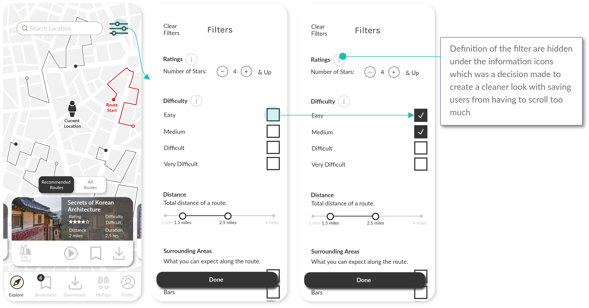

The focus of my design was based on peoples’ interest in learning through gaming opportunities. This developed into combining the idea of one's travel experience and learning about a location, and a scavenger hunt gaming experience that requires a user to search for hidden objects or spots.
Based on research, the problem statement was defined as follows:
Gamers, who love travelling, want a fun and exclusive experience that helps them learn about historical facts of a location that is not well known to the public.
The hypothesis was that following guide books can be cumbersome, and walking tours can be restricted by schedule or weather conditions. Both options also do not deliver the interactive experience a gamer may seek for.
Competitor Analysis
As the idea combines the entertainment aspects of a scavenger hunt game and travelling, and the educational aspects of learning about an area and its history, multiple products and services from different areas were reviewed for the competitive analysis such as:
Game industry focused on scavenger hunts
Tourism apps focused on Walking Tours
Tour guide books focused on hidden spots/locations in a city
Walking Tour Guides
The following four competitors were reviewed in depth for the competitor analysis that included key objectives, overall strategy, marketing advantages, marketing profile, and a SWOT analysis for each competitor*.
Through competitor analysis and market research, it was clear that there was an opportunity to capture both the fun and learning experience through creating an app that guides users to discover and learn about hidden spots within a city at their own pace and convenience.
A market analysis for a broader look at the competitive landscape was conducted as well which categorised potential competitors into 6 different competitor types. The following is a quadrant analysis that maps the different competitor types based on two key measurements: entertainment and education, which are the key elements for the app.
A. Tour guide books focused on major tour sites: This is a very competitive space which may deliver a lot of value in the context of learning, but because authors tend to pack in a lot of information related to major tour sites, there is a lack of the fun element. There is also a lack of interactiveness with the reader which would make this option less interesting for gamers.
B. Physical walking tours led by tour guides: This is also a very competitive space. While the educational element may be high, the fun element can be dependent on the tour guide. Also, rather than the travellers actively participating on tasks, the information flow is usually one way which makes it less interesting for gamers.
C. Walking tour mobile apps: Depending on the app, there is a bit of storytelling to some of these apps which makes it a little bit more interesting and engaging, but primarily the educational aspect is much stronger and the information flow tends to be one way which is from the app to the user. Some of the competitors in this space are VoiceMap, SideWalk, and GPSmyCity.
D. Tour guide books focused on hidden spots: There is an element of searching for hidden spots rather than the obvious and famous tourist attractions that may make this option interesting. However, there is a lack of interactiveness which makes it less interesting for gamers.
E. Scavenger Hunt Apps that has a focus on tourism: In the sense that these apps target both the gaming and tourism markets, the idea is very similar to this project. However, the apps currently out in the market are mainly focused on quiz solving and team play which minimises the experience of actually learning something. Some of the competitors would be Let’s Roam, CityHunt, and Live the City.
F. Scavenger Hunt Apps: As these apps are focused on gaming, there is a strong element of fun and entertainment that is specifically targeted for gamers. However, the goal for these apps are not designed to learn something new which decreases the educational factor. Some of the competitors would be Geocaching and GooseChase.
For details of the four competitor prfoiles ansd SWOT analysis, please click here.
Persona Development
Personas were developed using both quantitative data collected from surveys and qualitative information from user interviews.
Survey
A user survey was conducted with 26 respondents in total and with interesting differences between the two age groups:
Regardless of age group
96% has some form of planning for their travels
81% search information about a question or discovery on the spot when traveling
85% uses the GPS when navigating
81% have not played a scavenger hunt game when traveling. However, 91% of those respondents said a game would help learn more about the city.
User Interviews
4 individuals were interviewed, and based on their feedback, an affinity map was created. A total of 7 categories (pink post-its) were created to group the different observations and quotes from the interviews (yellow post-its), which were further synthesised into insights (blue post-its).
Personas & User Journey
2 personas were developed as a result of the survey and user interviews. User journeys for each of the persona were also developed based on the persona’s goals & needs, motivations, frustrations, and lifestyle.
User flows for each persona were defined based on the hypothetical journey map which was a reflection of their anticipated behaviour and thinking.
Hannah's User Flow
Legend
Young's User Flow
Information Architecture
Initial Draft
Initial draft of the sitemap was based on the user journey and user flow from the previous phase of the design process. There were 5 main navigation categories: Home, Routes, Profile, Preference Settings, and Info/Help.
However, since the initial draft was based on a hypothesis, an open card sorting was conducted to build the Information Architecture based on how potential users would actually categorise the different elements.
There were 26 cards in total and the summary of the analysis is as follows:
Insights
A. Sections planned for “Routes” were grouped together by participants.
B. Participants anticipated that “Number of completed tour routes” and “Number of visited cities” would fall under travel statistics.
C. Participants grouped the three together indicating that they should fall under the same category.
D. Sections planned for “Info/Help” were always grouped together by participants.
E. Cards related to settings were not grouped together as much as one would expected. The idea is to have these settings control the filters for a customised experience which is difficult to explain through a card sorting activity. User testing will provide more insight.
Conclusion
There were no major discrepancies on the groupings of cards compared to the original site map. However, there was a question of how sections were labelled. For example, instead of “Route”, participants seemed to consider this section related to a personalised experience. Revisions were made based on this insight.
Revised Sitemap
There were multiple revisions to the sitemap with insights based on the card sorting results. One key learning was not only just the importance of a personalised experience but how the labels can reflect such experience.
“Routes” section became “Favourites” as most participants mentioned bookmarks and downloads related to a personalised experience.
Route Search Results moved to the same hierarchy as the filters as participants considered both as search functions.
Users are provided the option to bypass “Favourites” if they wanted to start an audio tour from the route search results.
Instead of having travel statistic defined as “Profile”, the label changed to “My Trips” to further add the sentiment of personalisation. “Profile” instead became the label for settings as the card sorting results showed that people have a pretty strong association between “Profile” and settings.
Final Sitemap
Although revisions were results based on the card sorting results, the “Favourites” section required users to click multiple times to reach the audio tour that they have bookmarked or downloaded. Since the audio tour was an essential feature of the app, this was not ideal.
In order to solve this issue, Bookmarks and Downloads were brought one level above to the main navigation which reduces an extra step for the users.
The information architecture took several iterations based on both hypothesis and user research. It was critical to not only implement changes based on user feedback, but also to consider what makes most sense from a practical point of view.
Wireframing
The initial wireframes and prototypes were developed for two tasks:
Scenario 1: Searching and downloading routes
Scenario 2: Getting a recommended list and bookmarking a route.
Scenario 1: Searching and downloading routes
Setp 1. User taps on the search bar and selects “Current Location” (assumption: user has turned on location on the settings)
Step 2. User taps on the filter icon at the top right corner from the search results screen
Step 3. User adjusts the distance filter from the filter option and hits the filter icon again to get back to the map
Step 4. & 5. User swipes the route cards at the bottom to search for a route
Step 6. User taps the download button
Step 7. User taps the play button from the route description box
Step 7-1. Or, user taps the “Downloads” section from the navigation bar
Step 8. User taps the play button from the description box within the downloads section
Step 9. From the audio tour screen, user has the option to pause, exit, bookmark or learn more about a hidden spot
Scenario 2: Getting a recommended list and bookmarking a route
Setp 1. User taps on the search bar and types in a location he/she plans to visit
Step 2. User taps on the filter icon at the top right corner from the search results screen
Step 3. User enables “Recommended Routes” by tapping on the check box
Step 4. User taps the filter icon again to get back to the map
Step 5. User swipes the route cards to find the route he/she wants to bookmark
Step 6. User taps the bookmark icon from the route description box
Step 7. User taps the play button from the route card
Step 7-1. Or, user taps the bookmarks section from the navigation bar
Step 8. User taps the play button from the description box within the bookmarks section
Step 9. From the audio tour screen, user has the option to pause, stop, bookmark, or learn more about a hidden spot
Prototyping & Mid-Fidelity
The following are the two tasks on a mid fidelity prototype which was used for the usability testing.
Scenario 1: Searching and downloading routes
Scenario 2: Getting a recommended list and bookmarking a route
User Testing
A detailed usability test plan was developed in order to better understand how users interact with the prototype. Issues were analysed and prioritised based on the severity of an error.
Iterations
Based on the usability test results and high priority issues that were identified, the following changes were made on the mid-fidelity prototype:
Filter Page
Added a “Done” button to allow users to exit.
Took out “Recommended Routes”
Homepage
Recommended routes became a default on the Homepage
Bookmarks Page
BeforeAfter
Icons were used to visualise hierarchy between Routes and Spots
Audio Page
BeforeAfter
Modified UI elements on the map to illustrate the hierarchy between Routes and Spots
Added navigation function on the map
More Iterations for High-Fidelity Prototype
As part of the iterative design process, there were further changes to the design based on user feedback which included preference tests as well. The following are a couple of the tests that took place that made some significant changes to the design:
Dark/light mode
Option 1 (Original)Option 2
Results for Preference Test
Some of the common reasons why people preferred option 2 were:
Feels lighter
Feels more friendly
Feels more inviting
It’s more clearer and cleaner
The other designs feels like it’s an app for night time
Changes
The new design should have the lighter mode for all the onboarding/settings pages.
Route card designs
Option 1 (Original)Option 2
Results for Preference Test
Some of the common reasons why people preferred option 2 were:
I like to see the picture
It’s more engaging
Prefer the images to get a feeling of where I am going
Looks neater
It’s more structured
Changes
Change all the route card designs (explore pages/bookmark pages) to make the image more visible and reduce the text amount to only key information.
Design Language System
Final Design
Here are some of the key features and callouts on the design decisions:
Onboarding
Hand-drawn illustrations are used to describe the key features and benefits of the app.
Onboarding pages are kept short to 3 pages with minimal text to keep content engaging.
The original onboarding screen was changed from dark to light mode, and the size of the logo was reduced to help keep users focused on the content rather than the branding.
Tutorial
Tutorial is kept short to 2 steps and provides users the option to skip and learn as they go.
The radius of the dialogue box corners were reduced to ensure users could tap on the different options without issues.
Recommended Routes
Recommended routes for users display as a default on the Homepage, and users can easily toggle to “All Routes”.
In the original design, users would have to go to the filters to select recommended routes, but the usability test results revealed that users expect to see recommended routes by default without having to use the filter function.
Filters
Filters are an important feature to the app as it relates to a personalised experience for the users.
Most of the filter options are based on user interviews on what they would expect for a personalised experience on a scavenger hunt/travel app.
Descriptions of each filter were hidden under the “i (information)” icon to allow a cleaner look, and a “Done” button was added to easily exit the page.

Location Search
Location search replicates common search functionalities used in GPS applications. This was critical because searching for a specific location is a widely used feature for mobile users.
Users can quickly access previous locations they have searched or start typing in an address or location which would then present a list of options a user can select from.
Once a location is searched and selected, users get search results of different routes and the details of the routes from the route cards.
Browsing Routes
From the map, users can access information of where the route is in relation to the location they have searched, and a summary of the route from the route cards.
Route cards are displayed as a carousel where users can swipe left/right. The route card that appears on the center of the screen corresponds to the route highlighted (in red) on the map. Users can also tap the route on the map to get the corresponding route card.
Tapping on the route card will bring the user to a detail page of the route which offers a description of the route, details of the route, highlights, surrounding areas, and reviews & ratings from other users.
At the bottom of the rout details page, users have an option to start the audio, bookmark the route, or download the route. This provides an easy way of organising the route(s) the user may want to try out.
Bookmarking/Downloading a Route
All route cards will have a series of options users can take: playing the audio, bookmarking a route, and/or downloading a route. This is to provide an easy way of organising the route(s) based on users’ preferences.
Once the user taps on an icon either the audio will start playing, the route will be bookmarked, or the route will be downloaded. For bookmarks and downloads, user can easily confirm their action by checking the number increase on the bookmark or download icon at the bottom navigation bar.
Once the user bookmarks or downloads a route, the bookmark icon or the download icon on the route card will become bold, confirming the users’ actions. Users can simply tap on the icons again to undo the action.
Bookmarks
Users can access bookmarked routes by tapping on the bookmark icon from the navigation bar.
The “Bookmarks” page has two tabs: 1) bookmarked routes, and 2) bookmarked spots. Bookmarked spots will be covered later.
A visual hierarchy is used for routes and spots using icons to illustrate the difference of the two elements.
From the “Bookmarks” section, a user can start an audio or download the route.
Summary and Dashboard
Users can get a quick statistics of their travels. They can also tap on each icon to get a full list of all spots, routes, cities, and countries travelled.
There is a gamification feature on the dashboard to illustrate how the user compares with other players.
Users can share their experience on social media.
Audio Map View
Once users tap on the audio play button from a route card, they land on the audio page which has universal audio features such as a play/pause button, 10-seconds back/forward buttons, and skip buttons which enables users to jump to the previous or next spots on the map.
Users can access two types of map view. One is an overall view that displays all the spots along the route the user is on. The other is a navigation view where the app guides the user with directions. This is a feature that is commonly used on GPS applications.
Spot Discovery
As the audio guides the user to hidden spot locations, the user is presented with two options: 1) an option to tap on “I found the spot!” once a hidden spot is discovered, which will confirm a user’s action with a “+1 Spot!” sign (this gets added to the statistics on the dashboard under the “MyTrips” page), 2) an option to get help if user is lost.
Once user finds a hidden spot, user then has an option to find out more about the spot.
Bookmarking Spots
Users may want to save the details of the spots for later. In such case, users can either bookmark the spot from the audio page, or the spots details page.
Users can later access the bookmarked spots from the “Bookmarks” page.
Final prototype
What's Next?
There is still a lot of room for improvement for this project. The following are the list of things I would have liked to explore had I been given the time:
Desktop app While it made sense to create a mobile app that was intended for users who would be traveling on foot, the card sorting results made it clear that test participants categorised travelling in 3 phases: pre-travel planning, during travelling, and post-travel debriefing. Pre-travel and post-travel can potentially involve a lot of browsing, reading, and writing compared to the actual travelling phase. Behaviourally, this could mean users may prefer planning and debriefing using their desktops. The hypothesis would need to be researched and tested, but if hypothesis is proven to be true, a desktop app would make sense. There will have to be some consideration of what features to include on the desktop app as the actual scavenger hunt features during the travel phase would not be necessary on a desktop.
Filters During the usability test there were some interesting suggestions made by some of the participants for the filter options. This includes ideas such as themed routes or recommendations for the best time of a day to travel the routes. Personalisation is something I would have liked to focus on had there been more time for the project.
Customisation for the Bookmarks/Downloads pages
This relates to personalisation as well, but an idea I would like to explore through user testing and surveys would be the option for users to customise folders for the “Bookmarks” and “Downloads” pages. This project was focused on the actual travel phase during the scavenger hunt, but it would be insightful to explore the pre-travel and post-travel activities and behaviours of potential users. Folder customisation would relate more with the pre-travel planning phase and provide users with the flexibility to organise their preferred routes.
Team play mode The “Team Play Mode” is an option on the settings page in the current prototype, but since the focus of the project was more on the process of discovering routes and hidden spots, the prototype was developed only for the individual game mode. Providing a team play mode can be a way to monetise the app since it would be a unique feature that other competitor types (i.e. travel books, travel apps, walking tours) do not usually offer. I did initially consider charging by the route, but given that other competitor types are already doing this, it made more sense to stick with the idea of monetising from providing a platform for team play rather than the content itself. Had there been more time, developing a user flow and prototype for the team play mode is an idea I would have explored. This would have required much more time as the hypothesis would be that there would be different personas to consider, since the assumption is that the characteristics of people who travel individually are different from those who prefer group traveling. This also means that a complete different set of user flow, user journey, and information architecture under the team play mode would be required.
Accessibility for the visually impaired Accessibility for the visually impaired users is an area that needs more improvement on. The app provides text instead of audio based on user settings, which was mainly considered for accessibility for the deaf or hard of hearing users. However, given that discovering hidden objects/spots relies on the ability to see, considerations for the visually impaired was not included in the scope of this project. There is research to be done on the behaviour, thoughts, and feelings for the visually impaired when travelling which could potentially be an area to explore for this app.